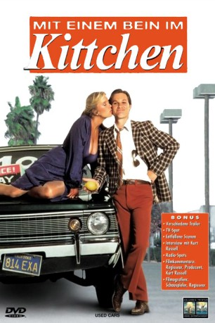
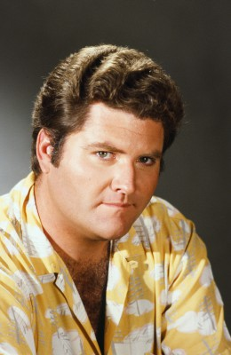

#7357 Mit einem Bein im Kittchen
Alternativ: Used Cars
 
 IMDB-Wertung: 6.8 / 10
IMDB-Wertung: 6.8 / 10  Metascore: 0
Metascore: 0 
Zwei Gebrauchtwagenhändler versuchen mit allen Mitteln, sich gegenseitig die Kunden wegzulocken. Der Grund: Ihre Verkaufsplätze liegen sich direkt gegenüber an der gleichen Straße. Dieser temporeiche Film voller Gags wurde von Steven Spielberg und John Milius produziert. Mit Jack Warden und Kurt Russell als zwielichtiger, junger Autoverkäufer, der versucht, mit 10.000 Dollar einen Senatorensitz zu kaufen.
Jahr: 1980
Dauer: 112 Minuten
FSK: 12
Land: USA Studio: Columbia PicturesTonspuren:
Untertitel:
Auflösung: 1080p (1920x1080) Größe: 10065 MB
Genre: Komödie
Regisseur:  Robert Zemeckis
Robert Zemeckis
Drehbuch: Robert Zemeckis
Soundtrack:
Darsteller:
 Kurt Russell als Rudy Russo
Kurt Russell als Rudy Russo Jack Warden als Roy L. Fuchs / Luke Fuchs
Jack Warden als Roy L. Fuchs / Luke Fuchs- Gerrit Graham als Jeff
 Frank McRae als Jim the Mechanic
Frank McRae als Jim the Mechanic- Joe Flaherty als Sam Slaton
 David L. Lander als Freddie Paris
David L. Lander als Freddie Paris Michael McKean als Eddie Winslow
Michael McKean als Eddie Winslow-  Michael Talbott als Mickey
 Harry Northup als Carmine
Harry Northup als Carmine Alfonso Arau als Manuel
Alfonso Arau als Manuel- Al Lewis als Judge Harrison
 Woodrow Parfrey als Mr. Ghertner
Woodrow Parfrey als Mr. Ghertner- Andrew Duncan als Charlie
 Dub Taylor als Tucker
Dub Taylor als Tucker- Cheryl Rixon als Margaret
 Wendie Jo Sperber als Nervous Nona
Wendie Jo Sperber als Nervous Nona Marc McClure als Heavy Duty Dubois
Marc McClure als Heavy Duty Dubois Clint Lilley als Al's Kid
Clint Lilley als Al's Kid Dick Miller als Man In Bed
Dick Miller als Man In Bed- Rita Taggart als Woman In Bed
- Betty Thomas als Bunny
 Russ Fega als Bus Boy
Russ Fega als Bus Boy- Terence Knox als Reese
- Will MacMillan als Police Sergeant
- Dave Adams als Video Technician
- Sam Ingraffia als Court Assistant
- Sanford Gibbons als Cop at Roadblock
- Peanuts als Toby, Dog
- Steve Wargo als Car Shopper , uncredited
- Deborah Harmon als Barbara Fuchs
- Claude Earl Jones als Al
- Beans Morocco als Stanley Dewoski
- Susan Donovan als Charlie's Wife
- Don Ruskin als Fuchs' Salesman
- Jan Sandwich als Al's Wife
- Tracy Lee Rowe als Al's Kid
- Kurtis Sanders als Al's Kid
- Patrick McMorrow als Mr. O'Hara
- Joseph Barnaba als Mr. Douglas
- Diane Hardin als Mrs. Douglas
- Dave Herrera als Mr. Lopez
- Walter Jackson als Mr. Jackson
- Gene Blakely als Mr. Books
- Tiny Wells als Food Giant
- Tony Lucatorto als Foley
- Josiah Steiner als Bicycle Kid
- Douglas O. Tepper als Bicycle Kid
- Frank Harmon als Bartender
- Allen Wood als Bailiff
- John M. Abbott als Clem
Datei: X:\1980\Mit einem Bein im Kittchen (1980, FSK12, 1920x1080).mkv seit 19.10.2017
Festplatte: HD 1980-1986
 Es gibt insgesamt 33 Filme in der Gruppe '1980'
Es gibt insgesamt 33 Filme in der Gruppe '1980'